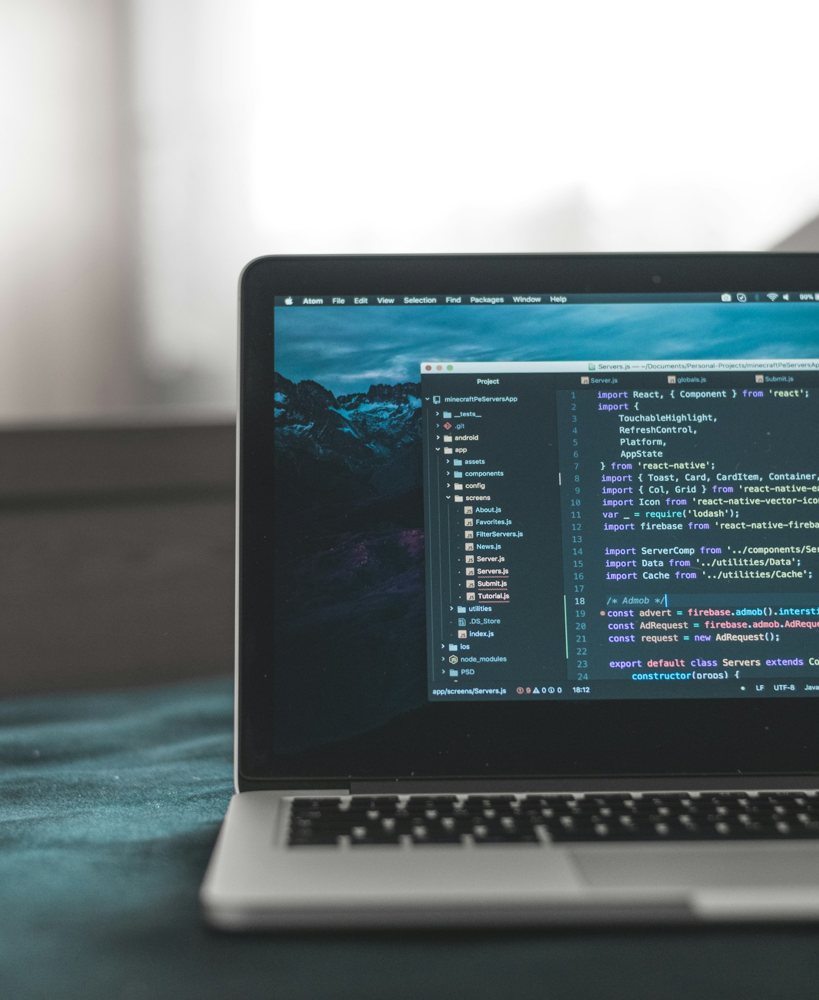

Coding Journey

I am building browser-based projects to strengthen my fundamentals in HTML, CSS, and JavaScript.
Coding helps me think with structure, test ideas quickly, and turn concepts into real outcomes.
I am currently focused on writing cleaner code, improving user interface quality, and documenting
each project clearly so I can track what I learned.
Current target: Publish two polished mini projects with complete documentation.
Basketball Development
Basketball is my main performance discipline. My routine includes ball handling, shooting,
stamina training, and game decision-making.
The sport has taught me resilience, team responsibility, and confidence. I am working on
consistency in execution and maintaining intensity through full sessions.
Current target: Track key metrics weekly and publish selected highlight clips.
Academics and Learning
In academics, my focus is on deep understanding, concentration, and step-by-step improvement.
I aim to build strong fundamentals that support long-term success.
I spend time revising concepts, improving learning methods, and reflecting on what works best.
This helps me perform better while keeping the learning process meaningful.
Current target: Log milestone achievements and learning wins each term.